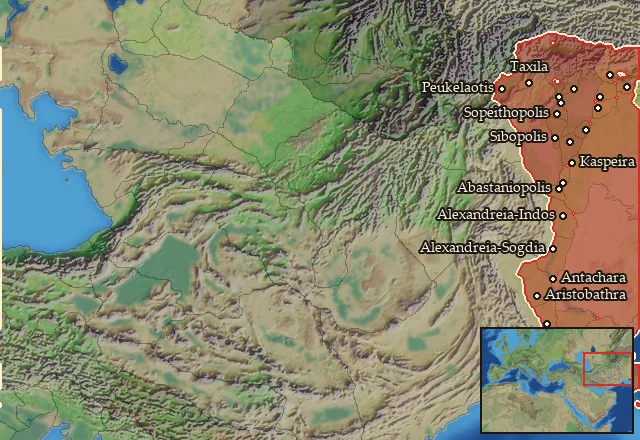

RTR: Imperium Surrectum
RTR: Imperium SurrectumIndians


- difficulty Very Difficult
- Indian culture
- believes
 Indian
Indian - 15 settlements
- capital Peukelaotis
- 34,200 manpower
- 1 character
- 17 faction units
- 431 regional units
Starting settlements
Indians begins with 15 settlements and 34,200 manpower.
| Settlement | Region | Size | Manpower | Already built | Settlement | Region | Size | Manpower | Already built |
|---|---|---|---|---|---|---|---|---|---|
| Peukelaotis (capital) | Gandaritis | large town | 4,000 | 13 buildings | Alexandreia-Kaukasia | Kapisene | city | 3,200 | 12 buildings |
| Ortospana | Paropamisadai | town | 2,200 | 5 buildings | Massaga | Hesperos Assakenia | town | 1,600 | 4 buildings |
| Nagara-Nysa | Gouraia | city | 2,100 | 13 buildings | Aornos-Embolima | Anatolike Assakenia | town | 1,600 | 6 buildings |
| Bazira-Ora | Assakenia | town | 1,900 | 6 buildings | Arigaion | Aspasia | large town | 2,000 | 11 buildings |
| Amakatis | Sydrakaia | town | 2,200 | 5 buildings | Agalassopolis | Agalassia | town | 1,900 | 6 buildings |
| Sibopolis | Sibia | town | 2,300 | 5 buildings | Alexandreia-Boukephala | Pandoouia | town | 2,800 | 8 buildings |
| Nikaia-Hydaspes | Hydaspes | town | 2,300 | 7 buildings | Sopeithopolis | Sopeitheia | town | 2,200 | 6 buildings |
| Glausaiopolis | Glausaia | large town | 1,900 | 12 buildings |
What is already built in each settlement
Peukelaotis, in Gandaritis: Small Treasury, Governor's Villa, Wooden Palisade, Homeland, Cisterns (Sanitation), Highland Pasturing (Husbandry), Region Information Scroll, Roads, Local Market, Basic Armoury, Shrine, Weavery (Urban), Orchards (Rural)
Alexandreia-Kaukasia, in Kapisene: Governor's Palace, Small Stone Wall, Dependency, Sewers (Sanitation), Highland Pasturing (Husbandry), Region Information Scroll, Jewellery Crafter (Industry), Local Market, Basic Armoury, Temple, Silk Trader (Urban), Vineyard (Rural)
Ortospana, in Paropamisadai: Governor's House, Direct Rule, Region Information Scroll, Local Barter, Orchards (Rural)
Massaga, in Hesperos Assakenia: Small Colony, Governor's House, Direct Rule, Region Information Scroll
Nagara-Nysa, in Gouraia: Governor's Palace, Small Stone Wall, Direct Rule, Sewers (Sanitation), Region Information Scroll, Paved Roads, Basin Irrigation (Crops), Local Market, Basic Armoury, Temple, Jewellery Crafter (Industry), Weavery (Urban), Fruit Dryer (Rural)
Aornos-Embolima, in Anatolike Assakenia: Small Colony, Governor's House, Direct Rule, Region Information Scroll, Local Barter, Lumber Camp (Rural)
Bazira-Ora, in Assakenia: Small Colony, Governor's House, Direct Rule, Cisterns (Sanitation), Region Information Scroll, Local Barter
Arigaion, in Aspasia: Large Colony, Governor's Villa, Wooden Palisade, Direct Rule, Cisterns (Sanitation), Region Information Scroll, Roads, Irrigation Ditches (Crops), Local Barter, Training Grounds, Shrine
Amakatis, in Sydrakaia: Small Colony, Governor's House, Homeland, Region Information Scroll, Irrigation Ditches (Crops)
Agalassopolis, in Agalassia: Small Colony, Governor's House, Homeland, Region Information Scroll, Irrigation Ditches (Crops), Local Barter
Sibopolis, in Sibia: Small Colony, Governor's House, Homeland, Region Information Scroll, Irrigation Ditches (Crops)
Alexandreia-Boukephala, in Pandoouia: Small Colony, Governor's House, Homeland, Cisterns (Sanitation), Region Information Scroll, Irrigation Ditches (Crops), Local Barter, Elephant Hunters (Rural)
Nikaia-Hydaspes, in Hydaspes: Small Colony, Governor's House, Homeland, Region Information Scroll, Local Barter, Lumber Camp (Rural), Open Field Pasturing (Husbandry)
Sopeithopolis, in Sopeitheia: Small Colony, Governor's House, Homeland, Region Information Scroll, Irrigation Ditches (Crops), Local Barter
Glausaiopolis, in Glausaia: Large Colony, Governor's Villa, Wooden Palisade, Homeland, Cisterns (Sanitation), Region Information Scroll, Roads, Basin Irrigation (Crops), Local Market, Training Grounds, Shrine, Orchards (Rural)
Starting diplomacy
At war with (1):  Maurya Empire
Maurya Empire
Like every faction, it is also at war with the  Free Peoples, who hold every settlement no faction does.
Free Peoples, who hold every settlement no faction does.
Reforms
Open to every faction: Military innovations have arrived!, Second wave of military innovations have arrived!.
Homeland
Indians's homeland is 26 regions. Only there can it install the Homeland government (more on homelands).

Abastania · Adraistaia · Agalassia · Arbia · Arsa · Audoumbaria · Chatriaia · Gandaritis · Glausaia · Hydaspes · Indos · Kaspeiraia · Kathaia · Kounindia · Mallia · Mousikania · Oreitaia · Pandoouia · Patalene · Portikania · Samboia · Sibia · Sogdia-Indos · Sopeitheia · Sydrakaia · Syrastrene
Starting characters
| Name | Role | Age | |||||||||
|---|---|---|---|---|---|---|---|---|---|---|---|
| Ashoka | General | 34 |
Units you can recruit
The same as in the main campaign.